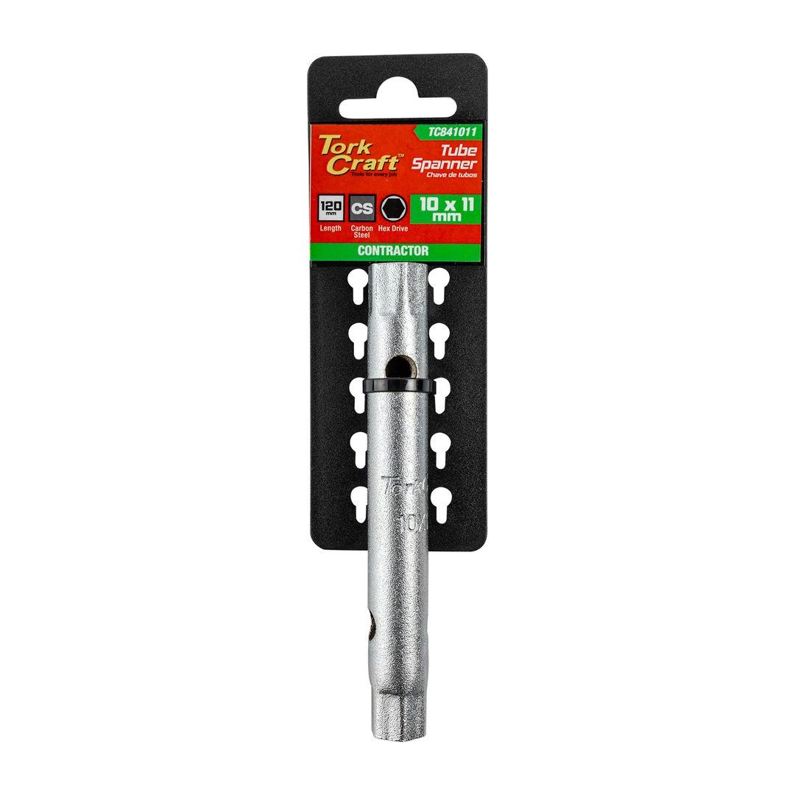

TC841011
29.90

Length: 120mm
A tube deep socket is a type of socket wrench attachment designed for accessing fasteners located in deep recesses.
This tool is essential when you need to apply torque to fasteners that are not easily accessible with regular sockets.